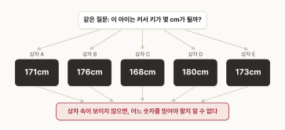
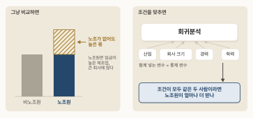
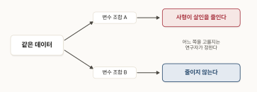
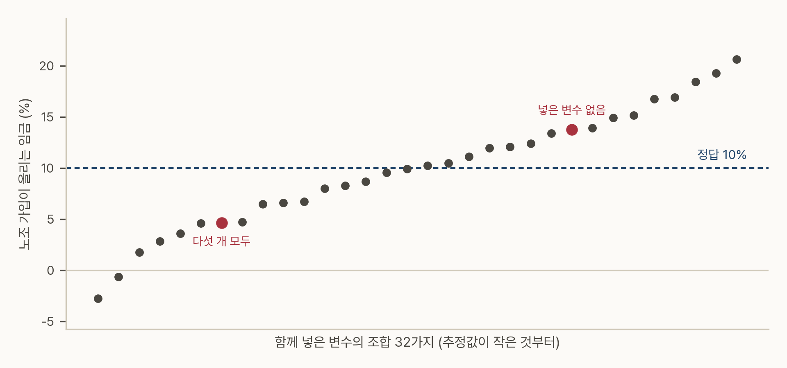
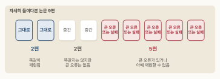
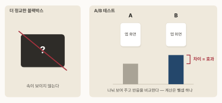

1. 경제학자들은 왜 서로의 실증을 믿지 않았나 — 숫자만 내놓는 블랙박스#
노벨상 수상 강의라면 보통 자기가 이룬 것부터 말할 것 같다. 그런데 경제학자 David Card는 실패의 기록으로 강의를 연다. 강의의 첫 문장은 1970년대 후반과 1980년대 초반을 응용경제학이 격동을 겪은 시기라고 부른다. 그리고 주목받은 몇몇 논문이 당시의 응용 연구에서 신뢰성 간극(credibility gap)을 찾아냈다고 말한다. 이 신뢰성 간극이 이 절의 주제다. 1970년대 말부터 1980년대 중반까지, 경제학자들이 데이터로 내놓은 숫자를 다른 경제학자들이 믿지 않았다는 이야기다. 그 분위기는 경제학자 Edward Leamer의 한마디에 잘 담겨 있다. “…we don’t take empirical work seriously in economics”(경제학에서 우리는 실증 연구를 진지하게 받아들이지 않는다).
Card가 이 이야기로 시작하는 까닭은 강의의 마지막 문단에 있다. 노동경제학자들이 “연구 설계”에 관심을 갖게 된 것은, 그때까지 원인을 밝히려고 해 온 방법이 통하지 않는다는 것을 깨달았기 때문이라는 것이다. 2021년 노벨 경제학상은 원인과 결과를 믿을 만하게 밝히는 방법을 만든 공로에 주어졌다. 그 방법이 바로 이 불신에 대한 대답이었다. 그러니 대답을 이해하려면 먼저 물음이 얼마나 심각했는지 알아야 한다.
이 절의 물음은 이것이다. 1980년 무렵 경제학자들은 왜 서로의 실증 연구를 믿지 않았을까?
블랙박스 다섯 개 — 속이 보이지 않으면 믿을 수 없다#
경제학자가 하는 일을 계산 장치에 빗대 보자. 질문을 넣으면 숫자로 답을 내놓는 장치다. “최저임금을 올리면 일자리가 얼마나 줄어들까?”, “노조에 가입하면 임금이 얼마나 오를까?” 같은 질문이 들어가면, 경제학자는 실제로 관찰한 숫자, 곧 데이터를 분석해서 숫자로 답한다. 이렇게 데이터를 분석해 질문에 답하는 연구를 실증 연구(empirical research)라고 한다. 실증 연구는 질문을 넣으면 숫자로 답하는 계산 장치인 셈이다.
이제 같은 질문 하나를 이런 장치 다섯 개에 넣었다고 해 보자. 질문은 “이 아이는 커서 키가 몇 cm가 될까?”다. 다섯 장치는 모두 속을 들여다볼 수 없는 상자다. 무엇을 넣으면 무엇이 나오는지만 보이고, 안에서 어떤 계산을 하는지는 보이지 않는다. 이런 장치를 블랙박스(black box)라 부른다. 자동차의 주행 기록 장치를 말하는 것이 아니라, 속이 까맣게 가려진 상자라는 뜻이다. 그림 1-1은 다섯 블랙박스가 내놓은 답을 그린 것이다.

그림 1-1. 같은 질문을 속이 보이지 않는 상자, 블랙박스 다섯 개에 넣었다. 숫자는 지어낸 것이다.
그림에서 보듯이 상자마다 답이 다르다. 168cm부터 180cm까지 벌어져 있다. 이럴 때 우리는 어느 숫자를 믿을까? 상자를 열어 볼 수 있다면, 어느 상자가 어떤 데이터를 썼는지, 어느 상자의 계산에 실수가 있는지 확인할 수 있을 것이다. 하지만 속이 보이지 않는다면 할 수 있는 일이 없다. 결국 어떤 숫자도 믿지 않게 된다. 아니면 내 생각과 맞는 숫자만 믿게 된다. 아이 키가 173cm쯤 될 거라고 생각했다면, 173cm를 내놓은 상자 E만 믿는 것이다.
1980년 무렵의 경제학이 이런 상태였다. 같은 질문에 연구마다 다른 숫자가 나왔고, 연구가 어떻게 그 숫자에 이르렀는지 바깥에서는 들여다보기 어려웠다. 그래서 경제학자들은 실증 연구 결과를 보고도 경제에 대한 자신의 생각을 바꾸지 않았다. Leamer가 말한 대로, 경제학자들의 생각은 대개 실증 연구에서 오지 않았다.
Card가 강의에서 제시하는 증거는 네 가지다. 거시 모형의 실패, 음의 소득세 실험을 둘러싼 다툼, 노조 임금 연구에 대한 H. Gregg Lewis의 결론, 그리고 재현 시도다. 여기에 하나를 더해, Leamer가 당시의 실증 연구에 던진 비판도 풀어 보자. 이 절을 마치면 “블랙박스의 속이 보이지 않는다”는 말이 경제학에서 구체적으로 무엇을 뜻했는지 알게 된다.
큰 블랙박스가 고장 나다 — 1970년대의 거시 모형#
첫째 증거는 경제 전체를 다루는 거시 모형이다. 1950~60년대 미국에서는 경제 전체를 수십, 수백 개의 방정식으로 설명하는 대규모 모형이 만들어졌다. 소비는 소득에 따라 이렇게 움직이고, 투자는 이자율에 따라 저렇게 움직이고, 물가는 실업에 따라 이렇게 움직인다는 방정식을 잔뜩 모아 서로 맞물리게 한 것이다. 정부는 이 모형으로 내년의 경제를 예측하고 정책의 효과를 계산했다. 원문 둘째 문장이 말하듯, 이 모형들은 1940년대 미국 카울스 위원회에서 시작된 연구의 핵심 유산으로 여겨졌다.
1970년대에 물가도 높고 실업도 높은 시기가 이어지자, 이 모형들의 예측은 크게 빗나갔다. 모형 속에서는 물가가 오르면 실업이 줄어야 했는데, 현실에서는 둘이 함께 올랐기 때문이다. Card의 표현을 빌리면 이 모형들은 경멸 속에 버려졌다.
예측이 빗나간 것보다 더 큰 문제는, 어디가 잘못됐는지 알기 어려웠다는 점이다. 톱니바퀴 수백 개로 된 시계가 늦게 간다면, 어느 톱니가 문제인지 찾기가 막막하다. 대규모 모형도 식이 서로 맞물려 있어서, 틀린 숫자가 어느 식에서 왔는지 가려내기 어려웠다. 큰 블랙박스가 고장 났는데, 속이 너무 복잡해서 고칠 곳을 찾지 못한 것이다.
참고: Card가 강의 첫 문단에서 언급하는 세 논문 Sims (1980), Hendry (1980), Leamer (1983)는 실증의 신뢰를 흔든 글로 꼽힌다. Sims는 대규모 거시 모형이 변수마다의 효과를 따로 떼어 내려고 세운 가정들이 믿기 어렵다고 비판했고, 그 대안으로 가정을 줄인 새 방법을 제안했다. Hendry의 논문 제목은 “Econometrics: Alchemy or Science?”(계량경제학: 연금술인가 과학인가?)다. Hendry는 이 논문에서 일부러 엉터리 회귀를 하나 만들어 보였다. 영국의 물가를 통화량 대신 누적 강수량으로 설명했더니, 오히려 더 잘 맞는 것처럼 보였다. 숫자가 잘 맞는다고 해서 그 관계가 진짜라는 보장은 없다는 것을 보여 주려는 장난스러운 경고였다. Card는 이 세 논문이 드러낸 신뢰성 간극이 특히 거시 데이터를 이용한 연구에서 컸다고 정리한다. Leamer의 비판은 뒤에서 자세히 보고, 그 간극이 개인을 하나하나 조사한 미시 데이터(micro data)를 쓰는 노동경제학에도 있었다는 이야기는 Lewis의 연구에서 본다.
실험을 해도 다툼은 끝나지 않았다 — 음의 소득세 실험#
둘째 증거는 사회 실험이다. 음의 소득세(negative income tax)는 소득이 낮은 가구에 정부가 돈을 채워 주는 제도다. 돈을 주면 사람들이 일을 덜 하지 않을까? 미국 정부는 1968년부터 실험에 참여한 가구를 제비뽑기하듯 무작위로 두 집단으로 나눴다. 한 집단에만 지원금을 주고, 두 집단을 몇 년 동안 지켜보았다. 진보와 보수 모두 이번에는 답이 나오리라 기대했다. 그런데 원문 셋째 문장이 말하듯, 실험은 조용히 끝났고 결과를 두고 의견만 크게 엇갈렸다. 실험이라는 좋은 비교를 마련했어도, 그 결과를 해석하는 방법이 투명하지 않으면 다툼은 끝나지 않는다.
함께 넣는 변수를 바꾸면 답이 바뀐다 — Leamer의 비판#
셋째 증거는 Leamer (1983)가 당시의 실증 연구에 던진 비판이다. Card는 강의에서 이 논문을 짧게 언급만 하지만, 여기서는 자세히 풀어 본다. Leamer의 논문 제목은 “Let’s Take the Con out of Econometrics”다. 계량경제학(econometrics)에서 “con”을 빼자는 말장난인데, con은 속임수라는 뜻이다. 이 비판을 이해하면 블랙박스의 속이 보이지 않는다는 말이 무엇인지 가장 분명해진다.
인물: Edward Leamer (1944–2025)
미국의 경제학자. Princeton에서 수학을 공부하고, University of Michigan에서 경제학 박사 학위를 받았다(1970).
Harvard를 거쳐 1975년부터 2018년 은퇴할 때까지 UCLA에서 가르쳤다. 국제무역과 계량경제학을 함께 연구했다.
책 「Specification Searches」(1978)에서, 연구자가 여러 모형을 이리저리 골라 보는 일 자체가 결과를 믿기 어렵게 만든다고 지적했다.
이 절에서 보는 1983년 논문은 그 생각을 짧고 날카롭게 정리한 글로, 지금도 실증 연구의 신뢰를 말할 때 가장 자주 인용된다.
먼저 경제학자들이 데이터로 원인의 크기를 추정하는 흔한 방법을 떠올려 보자. “노조에 가입하면 임금이 얼마나 오를까?”를 알고 싶다고 하자. 노조에 가입한 사람과 가입하지 않은 사람의 임금을 그냥 비교하면 안 된다. 노조원은 제조업이나 큰 회사에서 일하는 경우가 많은데, 제조업과 큰 회사는 노조가 없어도 임금이 높은 편이기 때문이다. 그래서 경제학자는 회귀분석이라는 계산 도구에 산업, 회사 크기, 경력, 학력 같은 변수를 함께 넣는다. 그러면 계산이 “산업도, 회사 크기도, 경력도, 학력도 같은 두 사람이라면 노조원이 얼마나 더 받는가”를 추정해 준다. 이렇게 다른 조건을 같게 맞추려고 함께 넣는 변수를 통제 변수(control variable)라고 한다. 그림 1-2의 왼쪽이 그냥 비교할 때의 문제를, 오른쪽이 통제 변수로 조건을 맞추는 생각을 그린 것이다.

그림 1-2. 노조원과 비노조원의 임금을 그냥 비교하면, 노조와 상관없이 원래 임금이 높은 몫(빗금)까지 노조의 효과로 섞인다. 회귀분석에 통제 변수를 함께 넣으면 조건이 같은 사람끼리 비교하는 셈이 된다. 막대 높이는 지어낸 것이다.
문제는 어떤 통제 변수를 넣을지 정하는 사람이 연구자 자신이라는 점이다. 넣을 만한 후보는 많고, 무엇을 넣느냐에 따라 답이 달라진다. Leamer는 사형 제도가 살인을 줄이느냐는 연구로 이것을 보여 주었다. 같은 데이터에서 함께 넣는 변수만 바꿨는데, 사형이 살인을 줄인다는 결론도, 그렇지 않다는 결론도 나왔다(그림 1-3). Leamer의 결론은 이 데이터로 사형의 효과를 말하는 것은 “too fragile to be believed”, 곧 믿기에는 너무 쉽게 깨진다는 것이었다. 결국 어떤 결론이 나오느냐는 그 연구를 수행하는 연구자가 어떤 변수를 고르느냐에 달려 있었고, 연구자는 대개 처음부터 자신이 믿던 쪽으로 고르기 쉽다. 블랙박스 다섯 개 가운데 내 생각과 맞는 상자만 믿는 것과 같다.

그림 1-3. Leamer가 보인 엇갈린 결론. 같은 데이터라도 함께 넣는 변수의 조합에 따라 “사형이 살인을 줄인다”는 결론도, “줄이지 않는다”는 결론도 나온다.
시뮬레이션 데이터로 해 보기#
이 일이 얼마나 쉽게 일어나는지 직접 해 보자. 이번에는 진짜 데이터 대신 컴퓨터로 데이터를 만든다. 정해 둔 규칙에 따라 컴퓨터가 가상의 데이터를 만들어 내고, 그 데이터로 분석을 해 보는 것을 시뮬레이션(simulation)이라고 한다.
시뮬레이션은 보통의 분석과 방향이 거꾸로다. 보통의 분석에서는 사람들의 임금, 노조 가입 여부 같은 데이터가 이미 있고, 그 데이터로 회귀식의 계수를 추정한다. 계수가 얼마인지는 모르고, 데이터에서 알아낸다. 시뮬레이션에서는 거꾸로 계수를 먼저 정해 두고, 그 식에 맞게 데이터를 만든다. 정답을 우리가 정했으니, 나중에 데이터로 추정한 값이 정답에 얼마나 가까운지 채점할 수 있다.
노동자 3,000명의 데이터를 이렇게 만들었다. 한 사람 한 사람의 임금은 다음 식으로 정했다.
노조, 제조업, 대도시, 큰 회사는 해당하면 1, 아니면 0이다. 경력과 학력은 햇수다. 노조 앞의 0.10이 우리가 정한 정답이다. 식의 왼쪽이 임금 자체가 아니라 임금의 로그라서, 이 계수는 “노조에 가입하면 임금이 약 10% 오른다”로 해석한다. 마지막의 우연은 같은 조건의 사람끼리도 임금이 들쭉날쭉한 몫으로, 컴퓨터가 사람마다 무작위로 뽑아 넣는다.
식에는 다른 조건 다섯 가지(경력, 학력, 제조업 여부, 대도시 여부, 큰 회사 여부)와 함께 하나가 더 들어 있다. 바로 성실함이다. 성실한 사람은 임금이 조금 높다(식의 0.10). 노조 가입 여부도 컴퓨터가 정했는데, 제조업이나 큰 회사에서 일할수록, 경력이 길수록 가입할 가능성이 높고, 학력이 높을수록, 그리고 성실할수록 가입할 가능성이 낮게 했다.
여기에서 핵심은 분석하는 사람이 받는 데이터에는 성실함이 빠져 있다는 것이다. 성실함은 임금에도 들어가고 노조 가입에도 들어갔지만, 정작 데이터에는 성실함을 적은 칸이 없다. 현실에서도 성실함 같은 것은 설문지에 잘 나오지 않는다. 분석하는 사람은 이 식을 모른 채, 성실함이 빠진 데이터만 보고 노조의 효과를 추정해야 한다. 이 빠진 칸 하나가 뒤에서 답을 흔든다.
이제 통제 변수 다섯 가지를 넣고 빼는 방법을 모두 따져 보자. 하나도 넣지 않는 방법, 경력만 넣는 방법, 경력과 학력을 넣는 방법…, 다섯 개를 모두 넣는 방법까지 32가지다. 이 32가지 방법으로 각각 노조 가입의 효과를 추정했다. 그림 1-4는 32개의 추정값을 작은 것부터 늘어놓은 것이다.

그림 1-4. 만든 데이터에서 함께 넣는 변수만 바꿔가며 추정한 노조 가입의 효과 32개. 남색 점선이 이 데이터의 정답 10%다.
그림에서 보듯이 같은 데이터에서 나온 답이 노조가 임금을 3% 낮춘다는 것부터 21% 올린다는 것까지 퍼져 있다. 어떤 연구자는 “노조 효과는 거의 없다”는 논문을 쓰고, 다른 연구자는 “노조가 임금을 20% 올린다”는 논문을 쓸 수 있는 셈이다. 둘 다 같은 데이터로, 둘 다 회귀분석이라는 같은 도구로 말이다.
그렇다면 다섯 개를 모두 넣으면 정답에 가장 가깝지 않을까? 그림에서 빨간 점으로 표시한 “다섯 개 모두”는 5%로, 정답의 절반 정도다. 데이터에서 빠져 있는 성실함이 남아 있기 때문이다. Leamer의 가정대로라면, 성실한 사람은 노조에 덜 가입하고 임금은 조금 더 받으니, 노조원의 임금이 실제 효과보다 낮게 나오는 것이다. 넣을 수 있는 것을 다 넣어도, 넣을 수 없는 것이 남으면 답은 빗나간다.
우리는 데이터를 직접 만들었기 때문에 정답이 10%라는 것을 안다. 하지만 현실의 연구자는 점 32개만 보고, 정답인 남색 점선이 어디 있는지 모른다. 블랙박스의 속이 보이지 않는다는 말은 이런 뜻이다. 숫자는 나오지만, 그 숫자가 맞는지 확인할 길이 없다.
노동경제학도 다르지 않았다 — Lewis의 노조 임금 연구#
숫자가 맞는지 확인할 길이 없는 것은 거시경제학이라 그렇다고 생각할 수도 있다. 거시경제학은 국내총생산, 물가, 실업률처럼 나라 전체를 하나로 뭉뚱그린 숫자를 다룬다. 이런 숫자는 1년에 한 차례, 많아야 석 달에 한 번 나오니 쓸 수 있는 데이터가 많지 않다. 노동경제학은 사정이 나아 보였다. 1970년대부터 노동경제학자들은 수천, 수만 명의 개인을 하나하나 조사한 미시 데이터를 쓰고 있었기 때문이다. 그런데 바로 이 노동경제학에서도 같은 문제가 드러났다. 그 증거가 넷째, Lewis의 노조 임금 연구다.
인물: H. Gregg Lewis (1914–1992)
미국의 경제학자. Card는 그를 현대 노동경제학의 지적인 아버지라고 부른다.
University of Chicago에서 박사 학위를 받고(1947) 1975년까지 그곳에서 노동경제학을 이끌었다. 그 뒤 Duke University에서 가르쳤다. 노벨상을 받은 Gary Becker(1992년 수상), Sherwin Rosen을 비롯해 수십 명의 박사 논문을 지도했다.
책 「Unionism and Relative Wages in the United States」(1963)로 노조가 임금을 얼마나 올리는지 측정하는 연구의 틀을 세웠다. 이 책은 많은 젊은 연구자에게 영향을 주었다.
1986년, Lewis는 자신의 1963년 책이 나온 뒤 20여 년 동안 쏟아진 노조 임금 연구를 거의 모두 모아 검토한 책을 냈다. 마침 앞의 시뮬레이션 데이터와 같은 질문, “노조는 임금을 얼마나 올리나”를 다룬 연구들이다.
결론은 뜻밖이었다. 가장 단순한 회귀분석으로 얻은 추정값이, 그보다 정교한 방법들로 얻은 추정값보다 더 쓸모 있고 믿을 만했다. 정교한 방법들은 앞의 시뮬레이션 데이터의 “성실함” 같은 문제, 곧 데이터에 없는 차이를 해결하려고 만든 것이었다. 그런데 그런 방법들이 효과를 가려내려면 연구자가 “이 변수는 임금에 직접 영향을 주지 않는다” 같은 가정을 세워야 한다. Lewis가 본 연구들은 그런 가정을 아무 근거 없이, 그 가정이 맞는지 따져 보지도 않고 세웠다.
블랙박스로 말하면 이렇다. 정교한 블랙박스는 안에 든 부품이 많다. 그 가운데 몇 개는 연구자가 “이렇겠지” 하고 손으로 깎아 끼운 부품이다. 그 부품이 틀리면 상자는 엉뚱한 숫자를 내놓지만, 겉으로는 정교해 보여서 틀린 줄 알기 어렵다. 단순한 방법은 적어도 무엇을 놓치는지가 눈에 보인다. Lewis의 결론은 정교함이 믿음을 보장하지 않는다는 것이었다.
이 결론이 특히 아팠던 데는 까닭이 있다. 그 정교한 새 방법들 상당수가 처음 시험된 곳이 바로 노조 임금 문제였기 때문이다. 새 방법을 시험하기에 가장 좋은 문제라고 골랐는데, 그 문제에서 새 방법이 옛 방법보다 못했던 것이다.
Card는 이 이야기에 개인적인 기억을 하나 덧붙인다. 프린스턴 박사과정에서 Card가 맡은 첫 연구 조교 일 가운데 하나가 Lewis 밑에서 일하며, Lewis가 검토한 연구들이 썼던 데이터를 다시 구성하는 일이었다. 많은 논문이 데이터를 어떻게 골랐는지 제대로 적어 두지 않아서, Lewis는 결과를 이해하려고 논문마다 어떤 표본을 썼는지 거꾸로 추적하는(reverse-engineer) 데 수많은 시간을 들였다고 한다.
강의의 숫자 다시 읽기 — 같은 데이터로 같은 답이 나오나#
마지막 증거는 Card의 강의에서 숫자가 가장 많이 나오는 대목이다. 1986년, Dewald, Thursby, Anderson 세 연구자는 아주 단순한 것을 확인해 보기로 했다. 학술지에 실린 실증 연구를, 같은 데이터와 같은 방법으로 다시 계산하면 같은 숫자가 나오는가? 이렇게 남의 연구를 그대로 다시 해 보는 것을 재현(replication)이라고 한다.
재현은 수학 숙제의 검산과 같다. 친구가 답을 냈으면, 풀이를 보고 따라 계산해 같은 답이 나오는지 확인하면 된다. 이 검산이 되려면 두 가지가 필요하다. 친구가 풀이 공책을 보여 줘야 하고, 그 풀이를 따라 하면 같은 답이 나와야 한다.
세 연구자는 경제학 학술지 한 곳(Journal of Money, Credit and Banking)에 1980~1984년에 실린 논문들을 대상으로 삼았다. 이 학술지는 1982년 7월부터 저자들에게 데이터와 계산 프로그램을 보관해 두라고 요구하고 있었다. 그런데 막상 저자들에게 데이터와 프로그램을 요청해 보니, 검산의 첫째 조건인 풀이를 보여 주는 일부터 문제였다. 이 규정이 생긴 뒤에 실린 논문인데도 저자의 4분의 1이 여러 번의 요청에 응답하지 않았다. 규정이 생기기 전에 실린 논문은 3분의 2가 응답하지 않았다.
데이터와 프로그램을 받은 논문 가운데 9편을 자세히 들여다본 결과가 그림 1-5이다.

그림 1-5. 자세히 들여다본 논문 9편의 재현 결과. Card의 강의에 인용된 Dewald, Thursby, and Anderson (1986)의 숫자다.
그림에서 보듯이 똑같은 숫자가 다시 나온 논문은 9편 가운데 2편뿐이었다. 5편은 큰 오류가 있거나 아예 재현할 수 없었다. 나머지 2편은 중간, 곧 똑같지는 않지만 큰 오류도 없는 경우다. 검산을 해 보니 아홉 명 가운데 다섯 명의 풀이가 틀렸거나 따라 할 수 없었던 셈이다.
세 연구자도 밝혔듯이 이 결과는 그리 놀라운 일이 아니었다. 당시 경제학자 대부분이 실증 연구를 낮게 보고 있었기 때문이다. 이 절 첫머리에서 본 Leamer의 말은 강의에서 바로 이 대목에 나온다. 블랙박스 비유로 돌아가면, 상자 속이 보이지 않았을 뿐 아니라 상자를 만든 사람에게 설계도를 보여 달라고 해도 응답이 없는 경우가 많았던 것이다.
프린스턴의 깨달음 — 더 정교한 블랙박스가 아니라 A/B 테스트#
지금까지의 네 가지, 아니 Leamer까지 다섯 가지 증거가 말하는 것을 정리하면 이렇다. 같은 질문에 연구마다 답이 달랐고(Leamer), 정교한 방법은 오히려 믿기 어려웠고(Lewis), 대규모 모형은 어디가 틀렸는지 찾을 수 없었고(거시 모형), 실험을 해도 분석을 두고 다투었고(음의 소득세), 남의 계산을 따라 해 볼 수조차 없는 경우가 많았다(재현). 모두 블랙박스의 속이 보이지 않는다는 한 가지 문제의 여러 얼굴이다.
Card가 대학원생이자 젊은 교수로 있던 프린스턴에서는 이 문제가 특히 크게 울렸다. Card의 지도교수 Orley Ashenfelter는 이미 1970년대에 직업훈련 프로그램의 효과를 측정하는 일이 얼마나 까다로운지 겪고 있었고, Card 자신도 함께 그 문제를 연구했다. 그리고 Lewis의 책이 나온 바로 그해, 그들의 제자 Robert LaLonde가 이 불신을 숫자로 증명해 보인다. 정답을 이미 아는 데이터에서 당시의 정교한 방법들이 정답을 맞히는지 시험한 것이다. 이것이 다음 절의 이야기다.
인물: David Card (1956–)
캐나다 온타리오주 Guelph의 낙농가에서 태어났다. Queen’s University를 졸업하고(1978), Princeton에서 Orley Ashenfelter의 지도로 경제학 박사 학위를 받았다(1983).
Princeton에서 가르치다가(1983–1997) 1997년부터 University of California, Berkeley에 있다.
1995년 John Bates Clark Medal을 받았다. 마흔 살 미만의 미국 경제학자에게 미국경제학회가 주는 상이다.
2021년 노벨 경제학상을 Joshua Angrist, Guido Imbens와 공동 수상했다. 상의 절반은 Card에게 “노동경제학에 대한 실증적 기여”로, 나머지 절반은 Angrist와 Imbens에게 “인과관계 분석에 대한 방법론적 기여”로 주어졌다.
대표 연구는 이 장에서 차례로 본다. 이민(마리엘 보트리프트), 최저임금(Alan Krueger와 함께한 뉴저지 연구), 교육이 소득을 얼마나 올리는지에 관한 연구.
프린스턴의 노동경제학자들이 찾은 대답을 미리 말하면, 더 정교한 블랙박스를 만드는 것이 아니었다. 누구나 속을 볼 수 있는 단순한 비교였다. 요즘 말로 하면 A/B 테스트에 가깝다. 앱을 만드는 회사가 화면 A와 화면 B를 사용자들에게 나눠 보여 주고, 어느 쪽에서 사람들이 버튼을 더 많이 누르는지 비교하는 방법이다(그림 1-6). 계산은 뺄셈 하나로 끝나고, 무엇과 무엇을 비교했는지 누구나 볼 수 있다. 무엇과 무엇을 비교하는지를 처음부터 밝히고, 그 비교가 공정한지 누구나 확인할 수 있게 하는 연구다. Card는 이것을 “설계 기반” 연구라고 부른다. 그 이름이 어디서 왔는지는 이 장의 셋째 절에서 본다.

그림 1-6. 더 정교한 블랙박스 대신 속이 보이는 단순한 비교. 화면 A와 B를 사람들에게 나눠 보여 주고 반응을 비교하면, 두 반응의 차이가 곧 효과다.
더 읽을거리
Leamer, E. (1983). Let’s take the con out of econometrics. American Economic Review, 73(1), 31–43. — 이 절에서 본 비판의 원문. 짧고 읽기 쉽다.
Dewald, W., Thursby, J., Anderson, R. (1986). Replication in empirical economics: The Journal of Money, Credit and Banking project. American Economic Review, 76(4), 587–603. — 재현 시도의 원문.
Angrist, J., Pischke, J.-S. (2010). The credibility revolution in empirical economics: How better research design is taking the con out of econometrics. Journal of Economic Perspectives, 24(2), 3–30. — Leamer의 비판 뒤 30년 동안 무엇이 바뀌었는지를 정리한 글. 이 책 전체의 길잡이로 좋다.
요약 — 이 절의 물음과 답
물음: 1980년 무렵 경제학자들은 왜 서로의 실증 연구를 믿지 않았나?
답: 연구가 어떻게 그 숫자에 이르렀는지 바깥에서 볼 수 없었기 때문이다. 속이 보이지 않는 블랙박스 다섯 개가 서로 다른 숫자를 내놓는 것과 같았다.
같은 데이터에서도 함께 넣는 변수를 바꾸면 답이 바뀌었다(Leamer). 시뮬레이션 데이터에서는 같은 데이터로 노조가 임금을 3% 낮춘다는 답부터 21% 올린다는 답까지 나왔다.
정교한 방법이 단순한 회귀보다 믿기 어려웠다. 근거 없는 가정 위에 서 있었기 때문이다(Lewis, 1986).
학술지 논문 9편 가운데 2편만 똑같이 재현됐다(Dewald, Thursby, and Anderson, 1986).
Card와 프린스턴의 대답은 더 정교한 블랙박스가 아니라 A/B 테스트처럼 속이 보이는 단순한 비교, 곧 연구 설계였다.
이 절의 강의영상
저자가 이 절의 핵심을 설명하는 영상이다(수상자의 강의 녹화가 아니다). 유튜브에서 보기